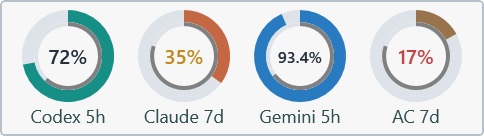
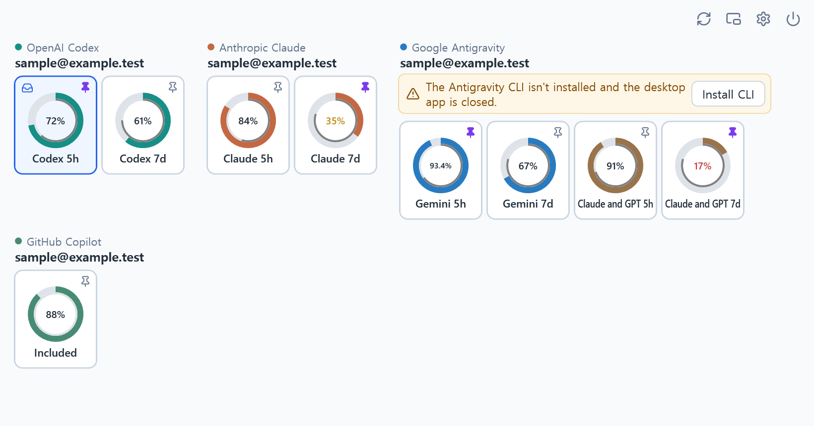

Room to use more75% quota / 15% time
Reset is close.
There’s plenty left.
A good time for that bigger coding task. Put spare quota to useful work before the window resets.
A small app for the bigger picture
See what remains. Know when it resets.
Make the most of the quota you already have.
Windows 10 / 11 · x64 · Free and open source
Installer and portable ZIP available on GitHub.

One place. Every window.
Keep an eye on the providers you use.
Pin a quota to your tray or floating monitor.

Reads quota through your official coding clients. Sign-in and session renewal stay with those clients.
Choose a tray ring. Pin your favorites to a floating monitor, then adjust its size and opacity.
Failed reads keep the last value marked stale, with a timestamp and an explanation of what needs attention.
Two rings. One useful comparison.
A percentage only tells half the story. Compare the allowance you have left with the time until its window resets.
The thick outer ring shows quota remaining. The thin inner ring shows time remaining, when the reset time is known.
A good time for that bigger coding task. Put spare quota to useful work before the window resets.
You may run out before the window resets. Save some allowance for the work you’ll need to do later.
The app turns the percentage amber below half the time remaining, and red below a quarter. These are pace cues, not predictions. Allowances and reset rules vary by provider, and another quota window may still limit use.
From download to a first reading
Get the Windows x64 installer or extract the entire portable ZIP. No administrator rights needed. Python and .NET are bundled.
Open Settings and enable the providers you use. Follow the setup or sign-in button if needed. One provider is enough.
Once a reading appears, click a ring to show it in the tray. Click its pin to add it to the floating monitor.
The installer and app are unsigned. Windows may show an unknown-publisher warning.
Bring your existing accounts
An eligible account and the official client are required. A browser-only login may not be enough. Direct Claude subscriptions stay separate from allowance supplied by Antigravity.
Provider setup guideLocal by design
The monitor reads quota from provider services through existing sessions or quota-only client commands. It checks GitHub for app updates. Some provider interfaces are internal and may change.
Read the privacy detailsA little less guesswork, every coding session.